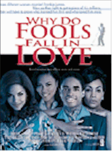

Contents | Features | Reviews | News | Archives | Store |
 |
|
| Movie Credits | Buy It! |
Why Do Feels Fall In Love
Review by Elias Savada
Posted 28 August 1998
|  | Directed by Gregory Nava. Starring
Larenz Tate, Halle Berry, Written by Tina Andrews. |
The four leads develop their high-octane roles well in this decidedly character-driven film. Tate (The Postman, Dead Presidents) may not be as youthful as the diminutive teenage Lymon, but he surrounds his role with tremendous energy and a remarkable screen presence. The sophisticated Zola and the under-educated Elizabeth have some licentious cat fights in each other’s recollections over the course of the two-hour film—I haven’t seen such wickedly funny wrasslin’ since Krystle and Alexis mixed it up on Dynasty back in the 1980s. Emira, on the other hand, is the outsider, a quiet, demure bystander who met the unassuming bigamist years after his fame had waned and then buried him. As the ladies learn more about each other’s relationship with their husband, their anger dissolves into a conditional friendship over the course of their testimony, helped along by a steady round of drinks. Additional support comes from actor/director Paul Mazursky as Lymon’s slimy record agent Morris Levy and, in several scene-stealing moments, from uncontainable Rock and Roll legend Little Richard, both as himself and as played as a young man by Miguel A. Nunez, Jr.
Frankie Lymon’s short but memorable rags-to-riches life, his troubled, violent mood swings, and his dynamic effect on our musical culture and the three women closest to his heart are recalled with a fascinating admiration for one of rock-and-roll’s short-lived stars. Writer Tina Andrews’ 15-year effort to bring this story of an extraordinary individual with a humpty-dumpty-life to the screen pays off big time. Here’s one for the ages.
Contents | Features | Reviews | News | Archives | Store
Copyright © 1999 by Nitrate Productions, Inc. All Rights Reserved.